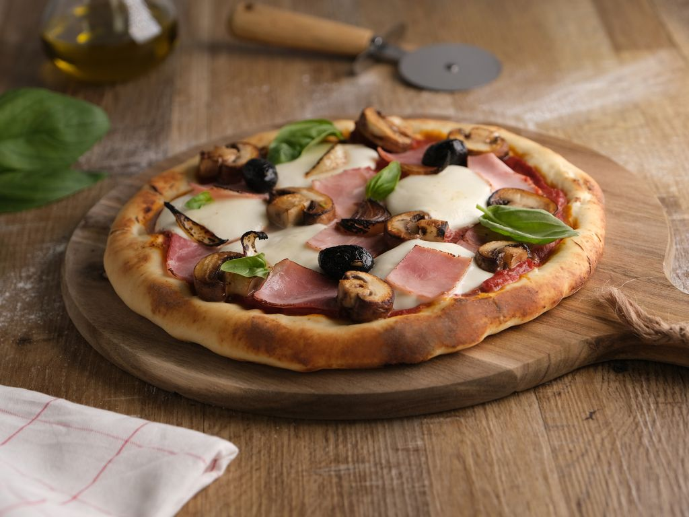

Delicious Homemade Pizza

Ingredients
English
- 1 pizza dough
- 1 onion
- 200g mushrooms
- 2 tbsp olive oil
- 100g tomato paste
- 50ml water
- 1 tbsp honey
- Salt and pepper
- 100g mozzarella
- 100g ham
- 50g olives
- Fresh basil
Polish
- 1 ciasto na pizzę
- 1 cebula
- 200g pieczarek
- 2 łyżki oliwy z oliwek
- 100g koncentratu pomidorowego
- 50ml wody
- 1 łyżka miodu
- Sól i pieprz
- 100g mozzarelli
- 100g szynki
- 50g oliwek
- Świeża bazylia
Instructions
English
- Preheat your oven to 200°C (400°F). Roll out the dough on a baking sheet lined with parchment paper. Peel and slice the onion and mushrooms. Sauté them in a small pan with olive oil.
- In a bowl, mix the tomato paste, 50ml of water, honey, salt, and pepper. Set aside.
- Slice the olives and mozzarella, and dice the ham.
- Spread the tomato sauce and half of the mozzarella on the pizza. Bake for 5 minutes. Add the ham, mushrooms, onions, and the remaining mozzarella, and bake for another 12 minutes.
- Before serving, sprinkle with sliced olives and chopped basil.
Polish
- Rozgrzej piekarnik do 200°C. Rozwiń ciasto na blasze wyłożonej papierem do pieczenia. Obierz i pokrój cebulę oraz pieczarki. Podsmaż je na małej patelni z oliwą z oliwek.
- W misce wymieszaj koncentrat pomidorowy, 50ml wody, miód, sól i pieprz. Odstaw na bok.
- Pokrój oliwki i mozzarellę w plastry, a szynkę w kostkę.
- Rozprowadź sos pomidorowy i połowę mozzarelli na pizzy. Piecz przez 5 minut. Dodaj szynkę, pieczarki, cebulę i pozostałą mozzarellę, a następnie piecz przez kolejne 12 minut.
- Przed podaniem posyp plastrami oliwek i posiekaną bazylią.